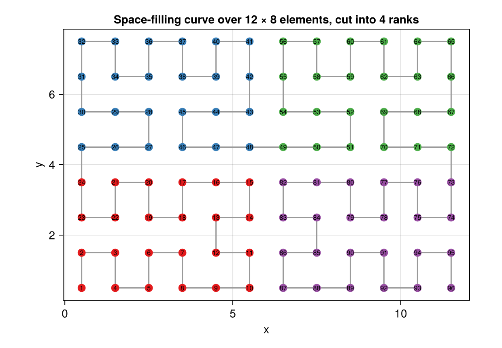

Run distributed with MPI
ClimaCore distributes a horizontal mesh over MPI processes by element. Each process owns a contiguous range of elements along a space-filling curve, holds one layer of ghost elements, and exchanges element-boundary data during direct stiffness summation (CG) or the DG halo exchange. The vertical direction stays whole on every rank.
A space-filling curve is a path that visits every element of the mesh once, stepping from each element to one of its neighbors. Numbering the elements along the curve gives every contiguous range of numbers a compact footprint: the elements a process owns form a patch with a short boundary, so few element faces are shared with other processes, and elements that are close in space are close in memory. ClimaCore uses a generalized Hilbert curve (Topologies.spacefillingcurve); on the cubed sphere the curve runs through the six panels in turn.
import ClimaComms
ClimaComms.@import_required_backends
import ClimaCore: Domains, Meshes, Topologies, Geometry
using CairoMakie
CairoMakie.activate!(type = "png")
nx, ny = 12, 8
domain = Domains.RectangleDomain(
Domains.IntervalDomain(
Geometry.XPoint(0.0),
Geometry.XPoint(Float64(nx));
periodic = true,
),
Domains.IntervalDomain(
Geometry.YPoint(0.0),
Geometry.YPoint(Float64(ny));
periodic = true,
),
)
mesh = Meshes.RectilinearMesh(domain, nx, ny)
elemorder = Topologies.spacefillingcurve(mesh)
# Element centers in curve order, and the rank that owns each element when
# the curve is cut into four equal ranges.
center(elem) = sum(Geometry.components(Meshes.coordinates(mesh, elem, v)) for v in 1:4) ./ 4
centers = [center(elem) for elem in elemorder]
nranks = 4
rank = cld.(eachindex(elemorder), cld(length(elemorder), nranks))
fig = Figure(size = (620, 430))
ax = Axis(fig[1, 1]; aspect = nx / ny, xlabel = "x", ylabel = "y",
title = "Space-filling curve over $nx × $ny elements, cut into $nranks ranks")
lines!(ax, first.(centers), last.(centers); color = :gray60)
scatter!(
ax,
first.(centers),
last.(centers);
color = rank,
colormap = :Set1_4,
markersize = 14,
)
text!(
ax,
first.(centers),
last.(centers);
text = string.(eachindex(elemorder)),
fontsize = 8,
align = (:center, :center),
)
fig
Each color is one process's range of the curve; the numbers are the element indices along it. The same construction on the cubed sphere is shown on the Topologies page. This page covers the ClimaCore side; installing MPI.jl, pointing it at a system MPI, and launching are ClimaComms's how-to guides.
Prerequisites
- MPI.jl in your default environment and an MPI library it can use.
ClimaComms.@import_required_backendsat the top of the script.
Steps
Select the context and launch through the MPI launcher; combine with
CLIMACOMMS_DEVICE=CUDAfor one GPU per rank:CLIMACOMMS_CONTEXT=MPI mpiexec -n 4 julia --project script.jl CLIMACOMMS_CONTEXT=MPI CLIMACOMMS_DEVICE=CUDA srun --ntasks=4 julia --project script.jlBuild the topology from the context.
Topologies.Topology2Dpartitions the mesh when the context is anMPICommsContext; passing the space-filling curve as the element order keeps each rank's elements spatially compact. TheCommonSpacesconstructors do both by default.import ClimaComms ClimaComms.@import_required_backends context = ClimaComms.context() ClimaComms.init(context) topology = Topologies.Topology2D(context, mesh, Topologies.spacefillingcurve(mesh))Topologies.DistributedTopology2Dis an alias ofTopology2D.Write the model as on one process. DSS buffers are created per field with
Spaces.create_dss_bufferand hold the send and receive buffers;Spaces.weighted_dss!(field, buffer)performs the exchange. Passing several fields (or aFieldVector) to one call shares the exchange. On DG spaces,Operators.start_dg_ghost_exchangestarts one halo exchange that several face operators consume.Reduce with the context.
sum(field)returns the local integral;ClimaComms.allreduce(context, sum(field), +)the global one. Output that should happen once goes behindClimaComms.iamroot(context).Write and read checkpoints with the context so that each rank writes its elements:
InputOutput.HDF5Writer(filename, context), which needs an MPI-enabled HDF5 (Write and read checkpoints).
Overlapping communication
Spaces.weighted_dss! is three phases that can be interleaved with local work:
Spaces.weighted_dss_start!(field, buffer) # post sends and receives
Spaces.weighted_dss_internal!(field, buffer) # average interior copies
Spaces.weighted_dss_ghost!(field, buffer) # wait, then average ghost copiesRestrictions
ColumnSpaceandMultiColumnSpacerun on a single process.- Column-local operations (
Fields.bycolumn,column,level) act on the rank's own columns. Remapping.interpolategathers to the root process; the returned array is valid on rank 0 andnothingelsewhere unless a destination is given on every rank.
The scaling measured with this design is on Performance and portability.